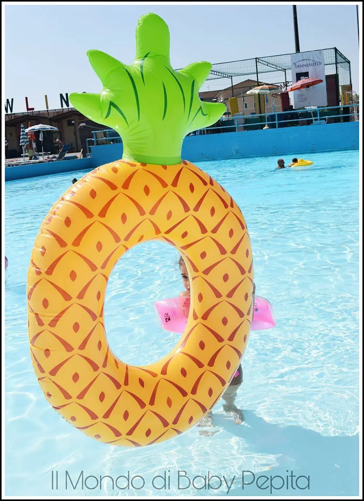
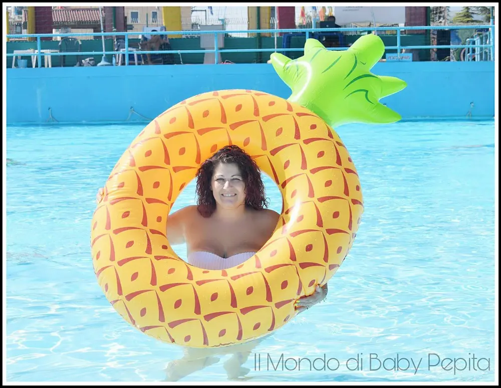
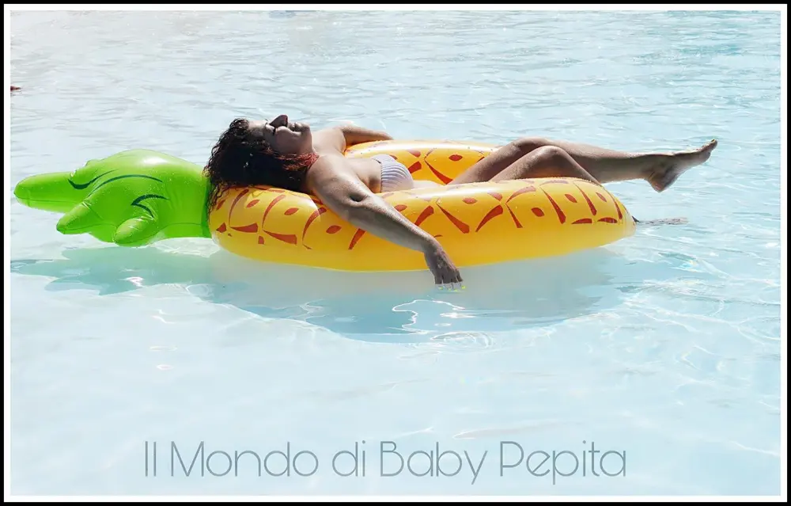
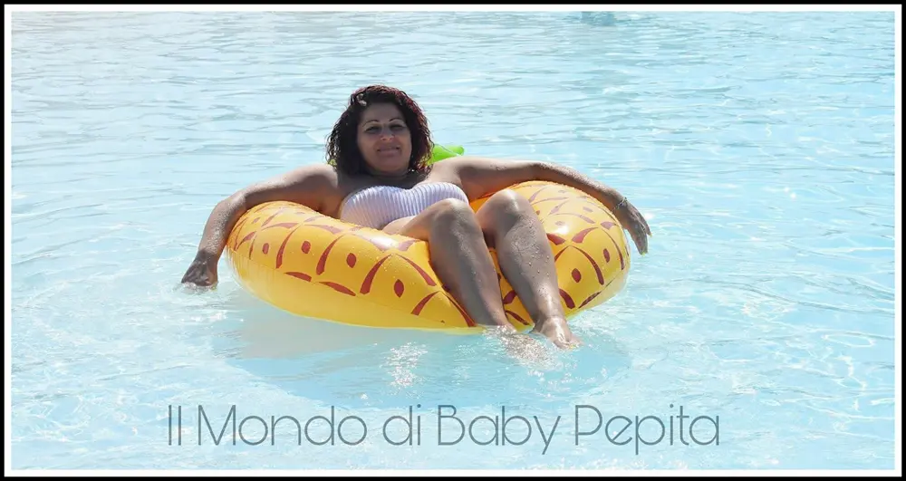
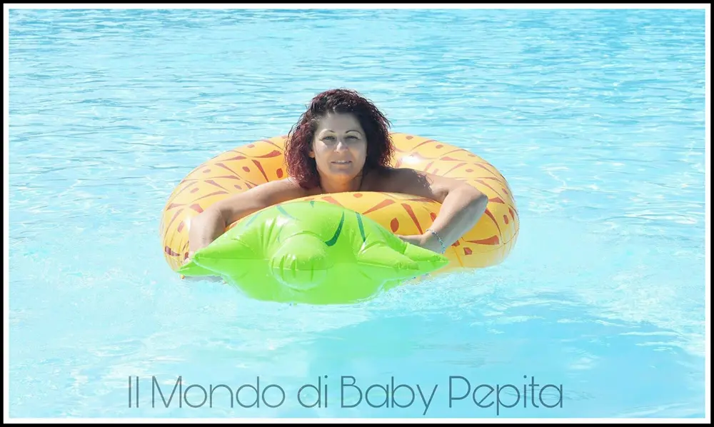
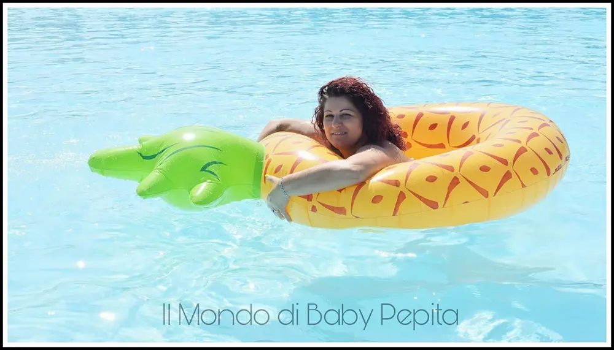

Gonfiabile Ananas gigante
Gonfiabile: Se ieri vi ho mostrato il fenicottero fucsia che ha fatto scalpore quest'estate, oggi vi mostro un altro gonfiabile, altrettanto gigante e che rientra nei mille gonfiabili di tutte le forme che si sono riprodotte quest'estate.
Questo è più classico come forma perché è a ciambella ovale ma comunque bello da vedere e da usare in acqua. Parliamo dell'ananas gigante.

(bella mia nipote che aiuta ^_^)Misure:160cm quindi immaginate quant'è bella in acqua.
Ha 2 valvole per il gonfiaggio (2 camere d'aria). Una per la ciambella.Una per il ceppo verde dell'ananas.Consiglio di gonfiare anche questo gonfiabile con un compressore elettrico o ad aria poichè è molto grande e potrebbe far girare la testa.Ma anche a bocca, da più persone, è molto facile.
Ha una stampa perfetta che richiama davvero la forma dell'ananas.
Verde il ceppo, la ciambella giallo vivo e i segni marroni che si vedono su una vera ananas.
È davvero bello come gonfiabile di questi colori vivi che di sicuro non passerete inosservati :D

È comodo in acqua per un totale relax e prendere il sole.

Comprende un kit di riparazione qualora si bucasse.
Adatto ad adulti e bambini e vi dirò di più, su questo fantastico gonfiabile sono salite ben 2 persone; un adulto e un bambino e non si è sgonfiato quindi ve lo consiglio per una bella giornata in acqua in allegria e perché no?! Farsi anche qualche bella foto come ricordo di un'estate divertente.


Di buon materiale e resistente.
Io lo consiglio a tutti per un'estate sprizzante e colorata.

Prezzo: 21,99 €
Per acquistarlo CLICCA QUI